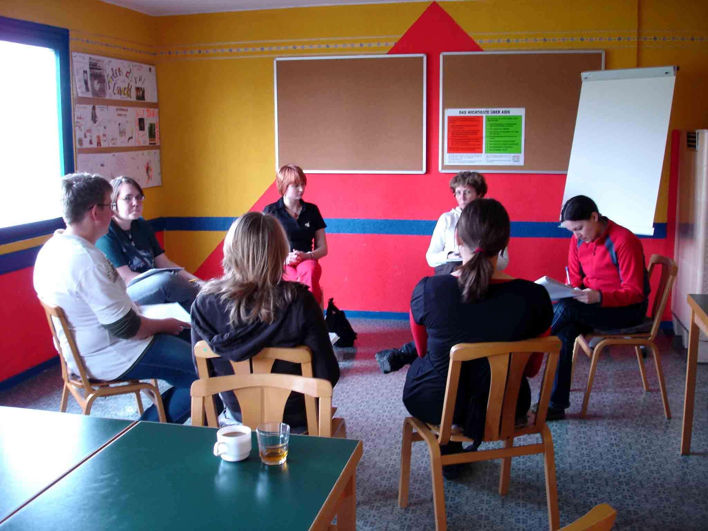
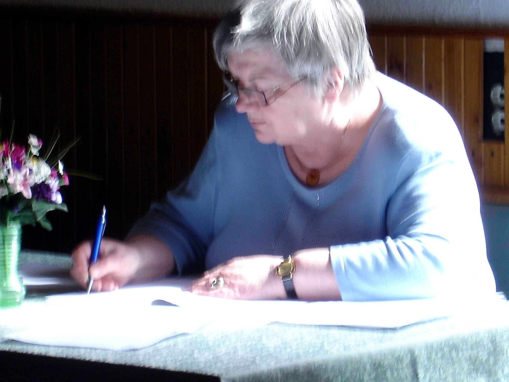
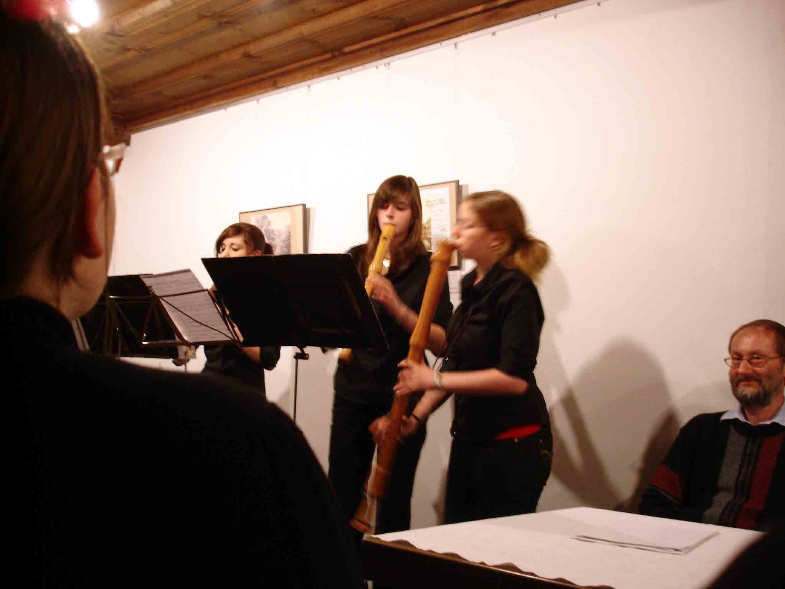
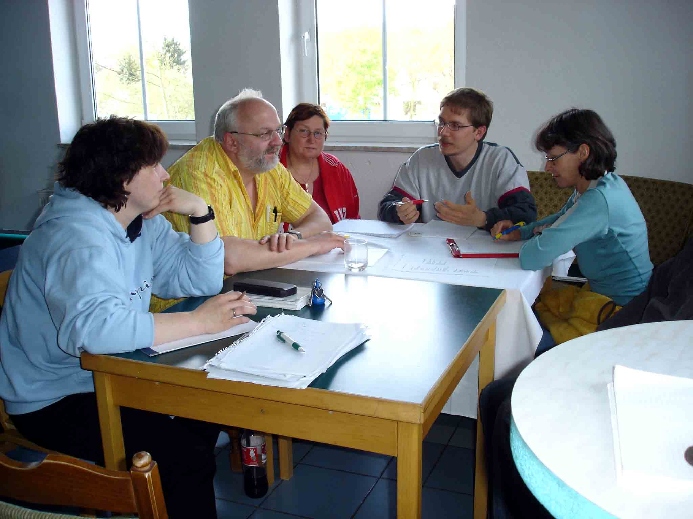
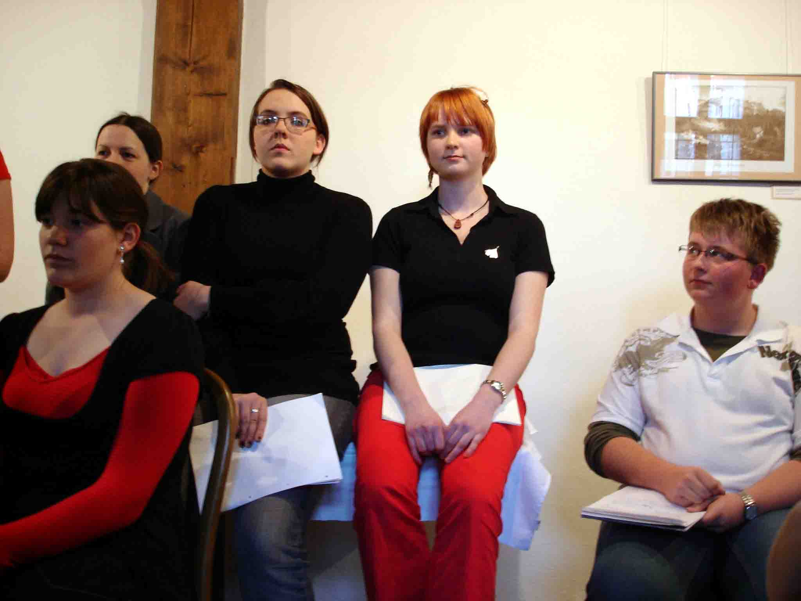

Unter dem Titel „Menschen – Paare – Zwiegespräche" trafen sich vom 2. bis 4. Mai 21 Autorinnen und Autoren aus Südthüringen, Hessen, Bayern und Rheinland-Pfalz zur 19. Literaturwerkstatt des Südthüringer Literaturvereins in der Jugendfreizeit- und Bildungsstätte Untermaßfeld. In drei Gruppen – Jugend, Prosa und Lyrik – erarbeiteten sie dabei neue Texte und widmeten sich dem Schwerpunktthema Dialog. Jens-Fietje Dwars, Schriftsteller und Redakteur der Thüringer Literaturzeitschrift „Palmbaum", las aus seinem Buch „Die alte Kuh und das Meer". Franz Bötz aus Rauenstein widmete sich in einem Vortrag dem Thema Sachbuch bzw. dokumentarische Erzählung. Holger Uske erinnerte mit Gedichten und Kurzprosa von Reiner Kunze sowie Verweisen auf Lebensstationen an dessen bevorstehenden 75. Geburtstag. Das Seminar wurde vom Land Thüringen und der Rhön-Rennsteig-Sparkasse gefördert.






